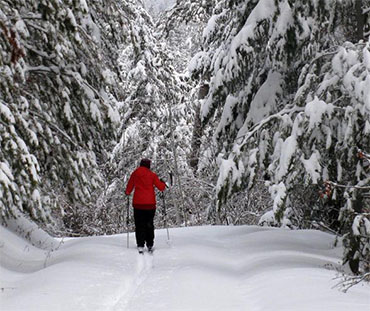

Soda Springs, Idaho
Here's the short of it.
- Current Temperature: °F
- High: °F
- Humidity: %
- Wind Speed: 17 mph
- Wind Chill: °F
Plan ahead, here's the five day forecast!
Forest Service Announcement!
With winter approaching, the Caribou-Targhee National Forest wants to remind people of seasonal closures to some roads and areas beginning today.
Seasonal closures protect migrating and wintering wildlife and help manage conflicting uses of some areas. The Caribou-Targhee encourages winter recreationists to obtain a current map designating what activities are allowed before traveling in the forest. Maps and information are available online at go.usa.gov/x7yjg.
“The forest has numerous seasonal wildlife closure areas,” said Kaye Orme, forest recreation program manager. “While each district is slightly different, the purposes are to protect winter range, wildlife and other natural resources.”
Two areas imposing travel restrictions starting today include the Ashton-Island Park area and Teton Basin area. The Ashton-Island Park area has issued a closure on the Big Bend Ridge until Jan. 1 to avoid disturbing migrating wildlife.
“As long as snowpack continues, the Ashton/Island Park Ranger district anticipates grooming to start mid-December,” the Caribou-Targhee said in a news release. “Groomed cross-country ski trails are closed to snowmobiles, dogs and snowshoers. Rental cabins are available for winter occupancy.”
Read MoreSoda Spring Events

You wanna contact us? K, here.
- 555-555-5555
- idecweathers@email.com